New Gemini skin
The new Gemini skin is available. To use it in your application, you have the following options:
-Dswing.defaultlaf=org.jvnet.substance.api.skin.SubstanceGeminiLookAndFeelUIManager.setLookAndFeel(new SubstanceGeminiLookAndFeel())UIManager.setLookAndFeel("org.jvnet.substance.api.skin.SubstanceGeminiLookAndFeel")SubstanceLookAndFeel.setSkin(new GeminiSkin())
The screenshots below show the Gemini skin in action:
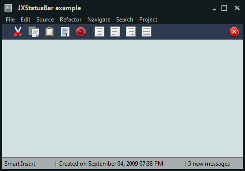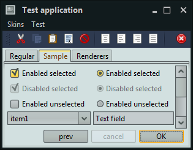 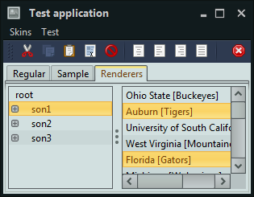
New Magellan skin
The new Magellan skin is based on the colors and design of the Ballpark web site. To use it in your application, you have the following options:
-Dswing.defaultlaf=org.jvnet.substance.api.skin.SubstanceMagellanLookAndFeelUIManager.setLookAndFeel(new SubstanceMagellanLookAndFeel())UIManager.setLookAndFeel("org.jvnet.substance.api.skin.SubstanceMagellanLookAndFeel")SubstanceLookAndFeel.setSkin(new MagellanSkin())
The screenshots below show the Magellan skin in action:
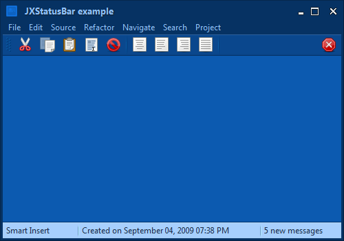 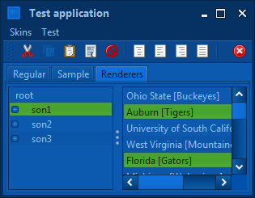
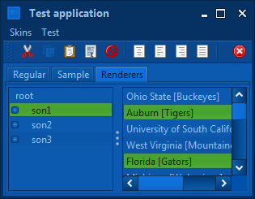
New Graphite Aqua skin
The new
Graphite Aqua
skin is based on the existing Raven Graphite skins and the highlight
colors of the HUD windows in iPhoto 09.
To use it in your application, you have the following options:
-Dswing.defaultlaf=org.jvnet.substance.api.skin.SubstanceGraphiteAquaLookAndFeelUIManager.setLookAndFeel(new SubstanceGraphiteAquaLookAndFeel())UIManager.setLookAndFeel("org.jvnet.substance.api.skin.SubstanceGraphiteAquaLookAndFeel")SubstanceLookAndFeel.setSkin(new GraphiteAquaSkin())
The screenshots below show the Graphite Aqua skin in action:
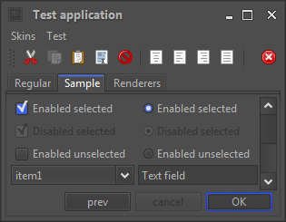 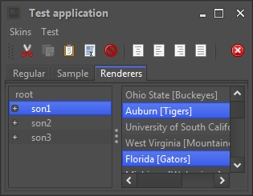Improved usability of Raven Graphite skins
The visuals of Raven Graphite and Raven Graphite Glass skins have been reworked to improve the visual usability. The following two screenshots show the same application panel under Raven Graphite skin in release 5.2 (first screenshot) and release 5.3 (second screenshot):
 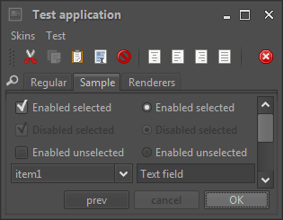
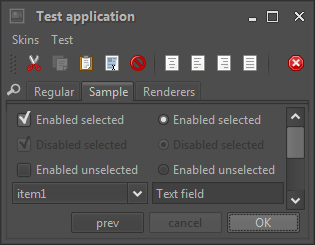
The main changes are:
- Removing the watermark that contributed significant visual noise
- Darker border color for controls, bringing more delineation to check boxes and radio buttons
- Darker background color for text components, resulting in better readability
The same changes were made for the Raven Graphite Glass skin. Here is the same application window under release 5.2 (first screenshot) and release 5.3 (second screenshot):
 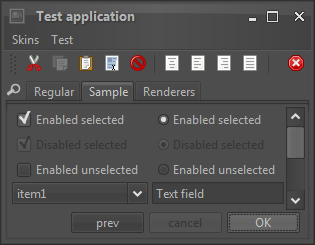
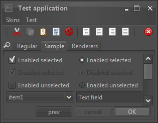
In addition to the visual changes above, the Raven Graphite Glass skin has removed the glass arc gradient from the toolbars and added a two-tone separator to delineate the title bar / menu bar from the rest of the application content.
Overlay painters
The decoration painters are used to paint the entire background area of the relevant containers - such as menu bars, tool bars, panels etc. Overlay painters, on the other hand, add the final polish that usually affects relatively small areas at the edges of the relevant decoration areas.
The Twilight
skin defines custom visual appearance for the title pane, the menu bar, the toolbars
and the status bar - the background of these areas is painted by the matching
decoration painter - in this case, the
MatteDecorationPainter.
To add the final polishing touch and create a unique visual footprint for this skin,
a number of overlay painters is used:

The Twilight skin defines four separate overlay painters, each
one associated with the relevant decoration areas:
// Add overlay painters to paint drop shadows along the bottom
// edges of toolbars and footers
this.addOverlayPainter(BottomShadowOverlayPainter.getInstance(),
DecorationAreaType.TOOLBAR);
this.addOverlayPainter(BottomShadowOverlayPainter.getInstance(),
DecorationAreaType.FOOTER);
// add an overlay painter to paint a dark line along the bottom
// edge of toolbars
this.toolbarBottomLineOverlayPainter = new BottomLineOverlayPainter(
new ColorSchemeSingleColorQuery() {
@Override
public Color query(SubstanceColorScheme scheme) {
return scheme.getUltraDarkColor().darker();
}
});
this.addOverlayPainter(this.toolbarBottomLineOverlayPainter,
DecorationAreaType.TOOLBAR);
// add an overlay painter to paint a dark line along the bottom
// edge of toolbars
this.toolbarTopLineOverlayPainter = new TopLineOverlayPainter(
new ColorSchemeSingleColorQuery() {
@Override
public Color query(SubstanceColorScheme scheme) {
Color fg = scheme.getForegroundColor();
return new Color(fg.getRed(), fg.getGreen(), fg
.getBlue(), 32);
}
});
this.addOverlayPainter(this.toolbarTopLineOverlayPainter,
DecorationAreaType.TOOLBAR);
// add an overlay painter to paint a bezel line along the top
// edge of footer
this.footerTopBezelOverlayPainter = new TopBezelOverlayPainter(
new ColorSchemeSingleColorQuery() {
@Override
public Color query(SubstanceColorScheme scheme) {
return scheme.getUltraDarkColor().darker();
}
}, new ColorSchemeSingleColorQuery() {
@Override
public Color query(SubstanceColorScheme scheme) {
Color fg = scheme.getForegroundColor();
return new Color(fg.getRed(), fg.getGreen(), fg
.getBlue(), 32);
}
});
this.addOverlayPainter(this.footerTopBezelOverlayPainter,
DecorationAreaType.FOOTER);
The overlay painters used in the Twilight skin are:
- An instance of
TopLineOverlayPainterassociated withtoolbardecoration area - paints the lighter top separator line along the top edge of the tool bar - see the top zoomed area in the screenshot above. - An instance of
BottomLineOverlayPainterassociated withtoolbardecoration area - paints the darker bottom separator line along the bottom edge of the tool bar - see the top zoomed area in the screenshot above. - An instance of
TopBezelOverlayPainterassociated withfooterdecoration area - paints the double bezel separator lines along the top edge of the status bar - see the bottom zoomed area in the screenshot above. - The instance of
BottomShadowOverlayPainterassociated withtoolbarandfooterdecoration areas - paints the drop shadow along the bottom edge of these areas - see the top zoomed area in the screenshot above.
Core Substance overlay painters are available in the
org.jvnet.substance.api.painter.overlay
package.
Fraction based painters
New core implementations of Substance painters are available in the
org.jvnet.substance.api.painter
package.
border.FractionBasedBorderPainter- fraction based border painterdecoration.FractionBasedDecorationPainter- fraction based decoration painterfill.FractionBasedFillPainter- fraction based gradient painterhighlight.FractionBasedHighlightPainter- fraction based highlight painter
All these painters have very similar definitions based on fraction-based stops and a color query associated with each stop. They allow painting multi-gradient fills / contours with exact control over which color is used at every gradient control point.
Here is how the new Graphite Aqua skin uses the fraction based highlight painter:
this.highlightPainter = new FractionBasedHighlightPainter(
"Graphite Aqua", new float[] { 0.0f, 0.5f, 1.0f },
new ColorSchemeSingleColorQuery[] {
ColorSchemeSingleColorQuery.EXTRALIGHT,
ColorSchemeSingleColorQuery.LIGHT,
ColorSchemeSingleColorQuery.MID });
And the resulting highlights:
with extra light color at the top (fraction 0.0f), light
color in the middle (fraction 0.5f) and mid color at the bottom
(fraction 1.0f).
Visual editor for color schemes
Jitterbug is a visual editor for creating and editing color schemes for Substance. It has been significantly reworked in this release to address the most common steps in the flow of creating new and editing existing color schemes:
- Creating a new and empty list of color schemes.
- Opening an existing
.colorschemesfile by dragging it to the editor. - Showing a list of all color schemes loaded from the file.
- Adding a new color scheme to the end of the list.
- Renaming an existing color scheme.
- Deleting an existing color scheme.
- Rearranging the order of color schemes.
- Tracking the modifications to the list of color schemes and each color scheme, showing the modification indication and warning message on closing the editor or loading another file.
- Saving the modified list to the original file.
- Saving the modified list to another file.
The new Jitterbug has been used to create all the color schemes for the new skins - Gemini, Magellan and Graphite Aqua. The following screenshot shows the new Jitterbug UI, zooming on the most important UI areas:
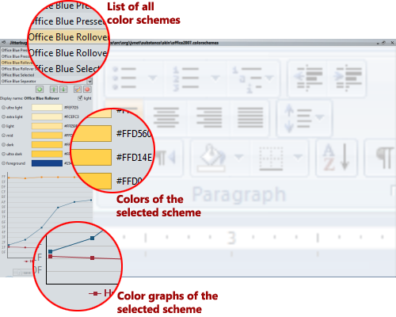To run Jitterbug remotely, run the following signed WebStart demo:

To run Jitterbug locally, run the following command:
java -cp substance-tools.jar;substance.jar;forms-1.2.0.jar tools.jitterbug.JitterbugEditor